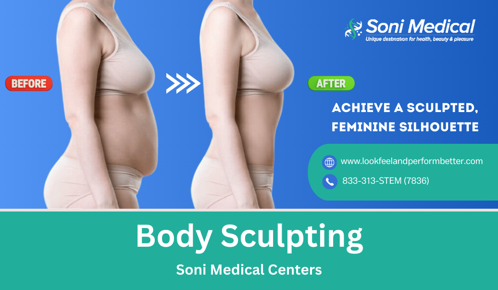
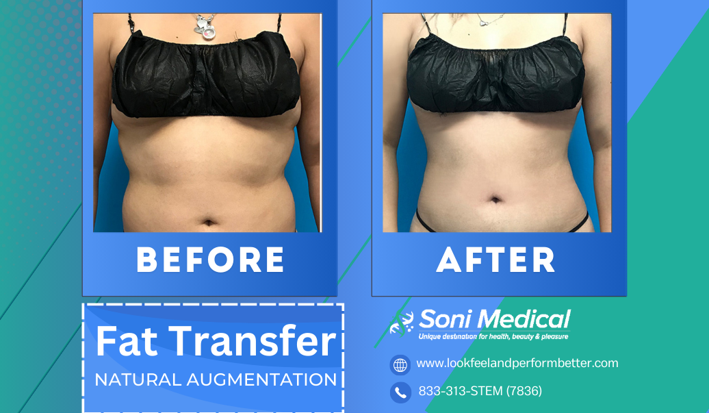
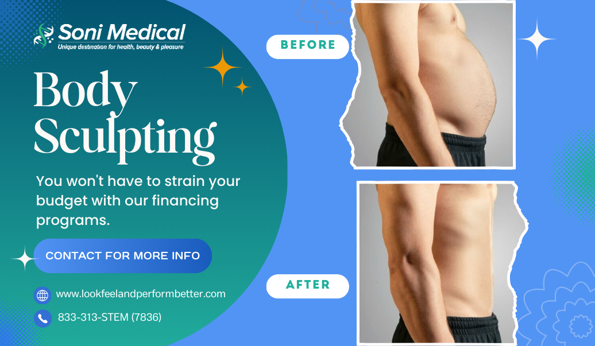
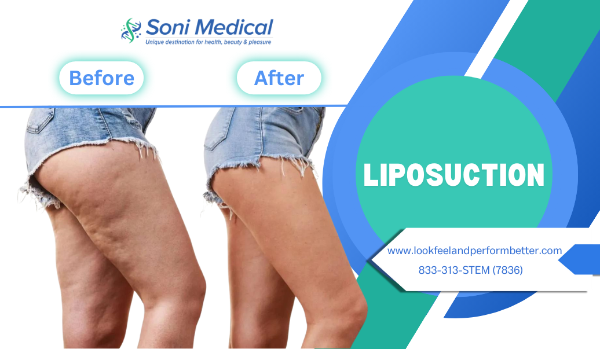
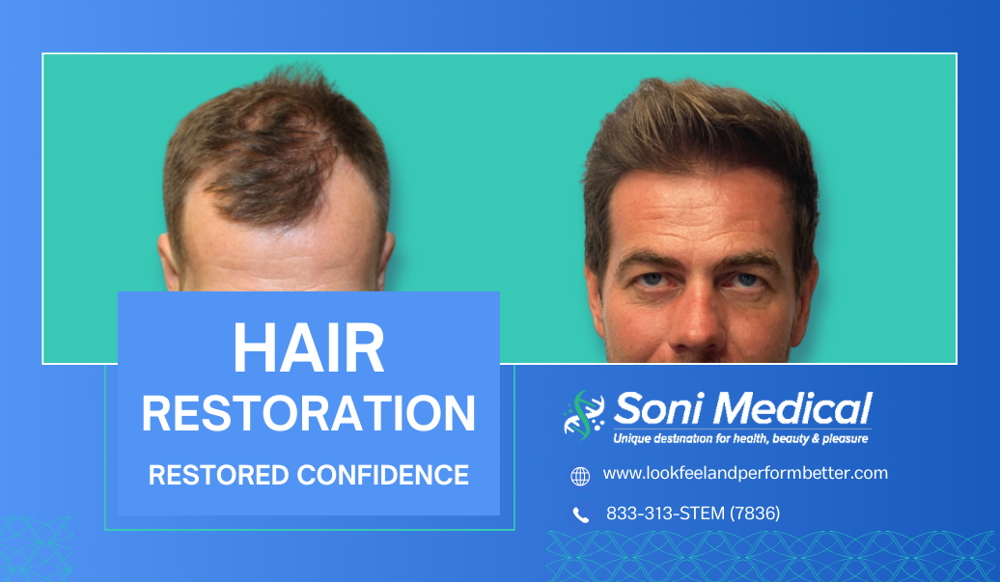

Soni Medical Centers
Advanced Sexual Health Treatment and Training Centers
MAKE AN APPOINTMENT MEDICAL TRAINING YOU CAN LOOK AMAZING TONIGHTAesthetic Medicine Training Center Open to the Public.
Soni Medical Center is Brooklyn's leading Medical Spa and provides the most advanced aesthetic treatment options available anywhere. Vampire Facelifts, Botox®, Collagen, PRP, PDO Threads, Neck Lifts, X-Shot™ enhancement, and more.
-

Body Sculpting
For women seeking to enhance their natural curves and achieve a more proportionate silhouette, female body sculpting offers a comprehensive solution. This specialized approach addresses common concerns such as stubborn fat deposits, skin laxity, and disproportionate body contours. Through techniques like liposuction, body lifts, and fat transfer, female body sculpting can sculpt and redefine areas like the abdomen, hips, thighs, and buttocks. Liposuction precisely targets and removes excess fat, while body lifts tighten and lift sagging skin, creating a more youthful and toned appearance.
-
Fat Transfer
Fat transfer, also known as fat grafting or fat injection, is a revolutionary procedure that harnesses the body's natural resources to enhance specific areas. It involves carefully extracting excess fat from one area, typically the abdomen or thighs, through a gentle liposuction process. This harvested fat is then purified and strategically injected into areas that require augmentation, such as the face, breasts, buttocks, or hands. Fat transfer offers a natural and long-lasting solution for restoring volume, correcting contour irregularities, and rejuvenating the appearance.
 -

Body Sculpting
Male Body Sculpting: For men seeking to achieve a more chiseled and masculine physique, body sculpting offers a tailored approach. Through a combination of liposuction and advanced body contouring techniques, male body sculpting targets stubborn areas of fat accumulation, such as the abdomen, love handles, and chest. By precisely removing excess fat deposits, the procedure helps to reveal and accentuate the underlying muscular definition.
-
Medical Weight Loss
Medical weight loss programs offer a comprehensive and scientifically-backed approach to achieving sustainable weight management. Unlike fad diets or quick fixes, these programs are designed and supervised by medical professionals, ensuring a safe and effective journey toward better health. Through a personalized plan tailored to individual needs and goals, medical weight loss provides a combination of dietary guidance, lifestyle counseling, and, if necessary, FDA-approved medications or supplementation.
More Info -

Liposuction
For individuals seeking a comprehensive body contouring solution, the combination of liposuction and skin tightening procedures offers a transformative approach. Liposuction, a surgical technique, precisely targets and removes stubborn pockets of fat from various areas of the body, such as the abdomen, thighs, arms, or chin. This process not only sculpts and redefines the body's curves but also addresses areas resistant to diet and exercise.
-
Hair Restoration
This specialized field combines the expertise of dermatologists, hair restoration surgeons, and trichologists to address the underlying causes of hair loss and provide personalized treatment plans. One of the most effective options is hair transplantation, which involves harvesting healthy hair follicles from donor areas and transplanting them to balding or thinning regions. Techniques like Follicular Unit Extraction (FUE) and Follicular Unit Transplantation (FUT) ensure natural-looking results with minimal scarring.
More Info
Ask about how you can save BIG by having your procedure during a teaching session. Call to find out more.
MAKE AN APPOINTMENT
How much does Botox® cost?
The cost of Botox® is often based on the number of units of Botox used. A typical session may involve 20 to 60 units, with the price of Botox® treatments starting at $500 per session.
What Are Dermal Fillers?
Dermal fillers are injectable substances used to restore volume, smooth wrinkles, and enhance facial contours. They are commonly used in cosmetic dermatology to reduce the appearance of aging and enhance facial features.
How Much Do Dermal Fillers Cost?
The cost of dermal fillers varies based on several factors, including the type of filler, the amount needed, and other factors.
- Hyaluronic Acid (HA) Fillers:
- Juvederm: $500 to $600 per syringe
- Restylane: $500 to $700 per syringe
- Calcium Hydroxylapatite (Radiesse):
- $600 to $800 per syringe
- Poly-L-lactic Acid (Sculptra):
- $700 to $900 per vial (multiple vials may be needed for optimal results)
- Polymethylmethacrylate (Bellafill):
- $800 to $1,500 per syringe
- Fat Injections:
- $2,000 to $5,000 per session (prices can vary widely due to the complexity of the procedure)
What is a Vampire PRP Facelift?
A Vampire PRP Facelift, also known as a Platelet-Rich Plasma (PRP) Facelift, is a non-surgical cosmetic procedure that uses the patient's own blood to stimulate collagen production and improve skin texture. The procedure involves extracting a small amount of blood, processing it to concentrate the platelets, and then injecting the platelet-rich plasma into the face.
How Much Does a Vampire PRP Facelift Cost?
The cost of a Vampire PRP Facelift can vary based on several factors, such as the geographic location, the provider's experience, and the number of treatments required. On average, the cost ranges from $1,000 to $2,500 per session.
- Vampire PRP Facelift:
- $1,500 to $2,500 per session, on sale now for $999 at Soni Medical
- Some patients require up to 3 sessions for optimal results
- Sessions are typically spaced 4-6 weeks apart
- Additional Costs:
- Consultation fee: $100 to $300 - FREE TODAY
- Follow-up appointments: $100 to $300 per visit
- Maintenance treatments: $750 to $1,500 per session, usually recommended every 6-12 months
What is a Vampire Facial?
A Vampire Facial, also known as a Platelet-Rich Plasma (PRP) Facial, is a cosmetic procedure that involves using the patient's own blood to promote collagen production and improve skin texture. The process involves extracting a small amount of blood, processing it to concentrate the platelets, and then applying the platelet-rich plasma to the face through micro-needling or injection.
How Much Does a Vampire Facial Cost?
The cost of a Vampire Facial can vary depending on factors such as geographic location, provider experience, and the specific technique used. On average, the cost ranges from $600 to $1,500 per session.
- Vampire Facial (PRP Facial with Micro-needling):
- $600 to $1,200 per session
- Most patients require 3-6 sessions for optimal results
- Sessions are typically spaced 4-6 weeks apart
- Additional Costs:
- Consultation fee: $100 to $300 FREE TODAY
- Follow-up appointments: $100 to $300 per visit
- Maintenance treatments: $300 to $800 per session, usually recommended every 6-12 months
What are PDO Threads?
PDO (Polydioxanone) threads are absorbable surgical sutures used in a minimally invasive cosmetic procedure known as a thread lift. These threads are inserted into the skin to lift and tighten sagging tissues, stimulate collagen production, and improve skin texture. PDO threads are made from a biocompatible material that gradually dissolves over time, leaving behind a network of supportive collagen fibers.
What does a PDO Thread Lift Cost?
The cost of a PDO thread lift can vary depending on factors such as the treatment area, the number of threads used, geographic location, and provider experience. On average, the cost ranges from $1,500 to $4,500 per treatment.
- PDO Thread Lift for Face:
- $2,000 to $4,500 per treatment
- Typically requires 1-2 treatments for optimal results
- Results can last up to 12-18 months
- PDO Thread Lift for Neck:
- $1,500 to $3,000 per treatment
- Typically requires 1-2 treatments for optimal results
- Results can last up to 12-18 months
- Additional Costs:
- Consultation fee: $100 to $300
- Follow-up appointments: $100 to $300 per visit
- Touch-up treatments: $500 to $1,500 per session, usually recommended every 6-12 months to maintain results
What is Micro-needling?
Micro-needling, also known as collagen induction therapy, is a minimally invasive cosmetic procedure that involves using fine needles to create controlled micro-injuries in the skin. These micro-injuries stimulate the body's natural healing process, promoting collagen and elastin production, which can improve skin texture, reduce the appearance of fine lines, wrinkles, and scars, and enhance overall skin rejuvenation.
What does Microneedling cost?
The cost of microneedling can vary based on factors such as the treatment area, the type of device used, geographic location, and provider experience. On average, the cost ranges from $200 to $800 per session.
- Microneedling for Face:
- $300 to $600 per session
- Most patients require 3-6 sessions for optimal results
- Sessions are typically spaced 4-6 weeks apart
- Microneedling for Neck:
- $200 to $400 per session
- Most patients require 3-6 sessions for optimal results
- Sessions are typically spaced 4-6 weeks apart
- Microneedling with PRP (Platelet-Rich Plasma):
- $600 to $800 per session
- Combines microneedling with PRP to enhance results
- Most patients require 3-4 sessions for optimal results
- Additional Costs:
- Consultation fee: $50 to $200
- Numbing cream: $25 to $50 per session
- Maintenance treatments: $200 to $400 per session, usually recommended every 6-12 months
Does liposuction hurt?
Liposuction is typically performed under general anesthesia or local anesthesia with sedation, which means patients do not feel pain during the procedure. After the surgery, patients may experience some discomfort, swelling, and bruising in the treated areas. Pain can be managed with prescribed medications, and most patients report that the discomfort is tolerable and subsides within a few days to a couple of weeks.
How much does liposuction cost?
The cost of liposuction can vary significantly depending on factors such as the extent of the treatment, the number of areas treated, the type of liposuction technique used, geographic location, and surgeon experience. On average, the cost ranges from $2,000 to $8,000 per treatment area.
- Liposuction for Abdomen:
- $3,000 to $7,500
- Liposuction for Thighs:
- $2,000 to $5,000 per thigh
- Liposuction for Arms:
- $2,000 to $4,000 per arm
- Liposuction for Chin and Neck:
- $2,000 to $5,000
- Additional Costs:
- Anesthesia fees: $500 to $1,500
- Surgical facility fees: $500 to $2,000
- Pre-operative lab tests: $100 to $500
- Post-operative garments: $100 to $300
- Prescription medications: $50 to $200
What is Body Sculpting / Fat Transfer?
Body sculpting, also known as fat transfer or fat grafting, is a cosmetic procedure that involves removing fat from one area of the body (such as the abdomen, thighs, or back) through liposuction and then injecting it into another area to enhance volume and improve contours. Common areas for fat transfer include the breasts, buttocks, face, and hands. This procedure allows for natural-looking augmentation and can help achieve a more balanced and proportionate figure.
How much does Body Sculpting / Fat Transfer Cost?
The cost of body sculpting and fat transfer can vary widely depending on factors such as the extent of the procedure, the number of areas treated, geographic location, and surgeon experience. On average, the cost ranges from $2,000 to $15,000.
- Fat Transfer to Breasts:
- $5,000 to $10,000
- Fat Transfer to Buttocks (Brazilian Butt Lift):
- $8,000 to $15,000
- Fat Transfer to Face:
- $3,000 to $6,000
- Fat Transfer to Hands:
- $2,000 to $4,000
- Additional Costs:
- Anesthesia fees: $500 to $1,500
- Surgical facility fees: $1,000 to $3,000
- Pre-operative lab tests: $100 to $500
- Post-operative garments: $100 to $300
- Prescription medications: $50 to $200

We help you get your sexy on
Our centers are lead by the world renowned Dr. Prabhat Soni, ABIM,FCCP, SCCM, DABSM, DABOM, AAPOM,DAAAM, ABAARM. He is the first doctor to get FDA approval to treat Covid 19 patients with stem cells and founded Soni Medical Centers to ensure patients have the opportunity to access world class, advanced, and comprehensive medical services without the luxury spa pricing.
What our patients are saying

Awesome !! I am 70 year old and gave up for most of the good things in my life . I came across Dr Soni's slogan "20 years younger in 20 minutes" I went to his clinic and received P-shot , Gainswave & Testosterone pellets with Botox for my wrinkles. You won't believe I started feeling like my young days came back instantly and I feel more energy, more stamina and feel like a new young man again.

Goyal Subhash
Google Reviews
The best doctor and best staff. I always struggled with weight loss and tried everything. I made an appointment with Dr. Soni and it was the best decision I ever made. I was 205lbs when I first visited the office and I was feeling sad and depressed about my weight. I am so happy that I met Dr. Soni he has changed my life forever. I am truly grateful. I would highly recommend Dr.Soni 100% if you struggle with weight loss.

Valerie Mercado
Google Reviews
I saw another Dr in the office she was FABULOUS, She requested that I take some bloodtest and returned to see her on the following week before I get my sleep study test done, she very patient and listened to all my concerns and answered all my questions.